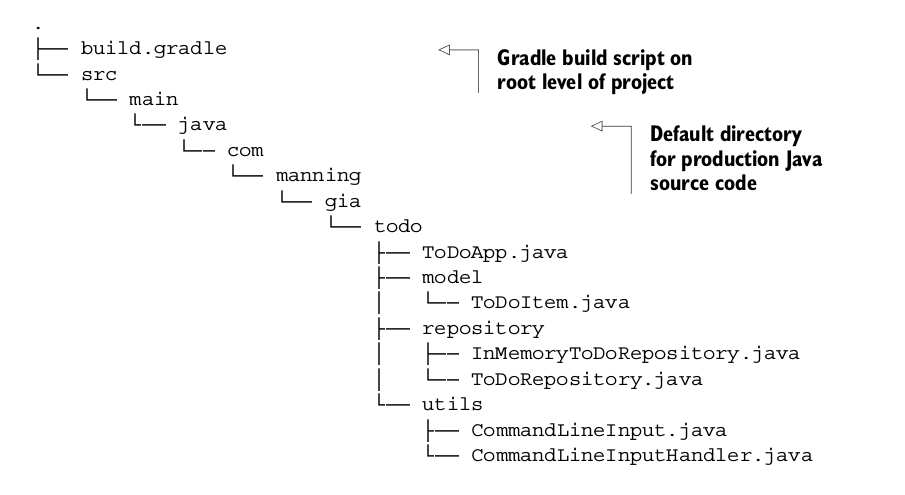
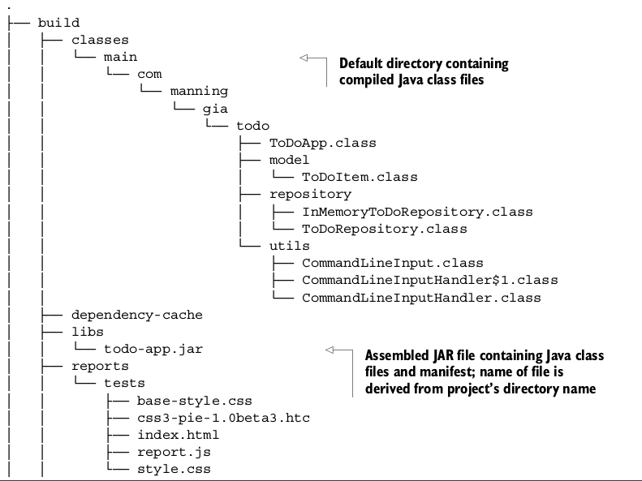
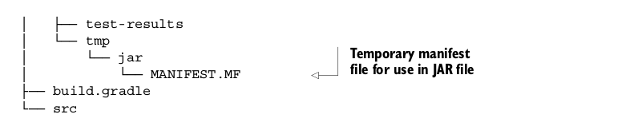

构建Java项目
上一节我们简要介绍了如何编写一个单机的To Do应用，接下来要打包部署成可执行的应用，我们需要编译源代码，生成的class文件需要打包到JAR文件中。JDK提供了javac 和jar工具帮助你实现这些任务，但是你也不想每次源代码发生变化时你都手动去执行这些任务吧。
Gradle插件能够自动化完成这些任务，插件引入了一些领域特有的观念，其中一个Gradle插件就是java插件，Java插件不仅仅只有编译和打包的功能，它给你的项目安排了一个标准布局，并确保你所有的任务都是按序执行，现在该应用java插件来构建你的build脚本了。
使用java插件
每个Gradle项目都会创建一个build.gradle文件，如果你想使用java插件只需要添加下面这行代码：
apply plugin: 'java'
这一行代码足以构建你的项目，但是Gradle怎么知道你的源代码放在哪个位置呢？java插件的一个约定就是源代码的位置，默认情况下插件搜索src/main/java路径下的文件，你的包名com.manning.gia.todo会转换成源代码根目录下的子目录，创建build脚本之后你的项目结构应该是这样的：

构建项目
现在你可以构建你的项目了，java插件添加了一个build任务到你项目中，build任务编译你的代码、运行测试然后打包成jar文件，所有都是按序执行的。运行gradle build之后你的输出应该是类似这样的：
$ gradle build
:compileJava
:processResources UP-TO-DATE
:classes
:jar
:assemble
:compileTestJava UP-TO-DATE
:processTestResources UP-TO-DATE
:testClasses UP-TO-DATE
:test
:check
:build
输出的每一行都表示一个可执行的任务，你可能注意到有一些任务标记为 UP-TO-DATE,这意味着这些任务被跳过了，gradle能够自动检查哪些部分没有发生改变，就把这部分标记下来，省的重复执行。在大型的企业项目中可以节省不少时间。执行完gradle build之后项目结构应该是类似这样的：
 
在项目的根目录你可以找到一个build目录，这里包含了所有的输出，包含class文件，测试报告，打包的jar文件，以及一些用来归档的临时文件。如果你之前使用过maven,它的标准输出是target，这两个结构应该很类似。jar文件目录build/libs下可以直接运行，jar文件的名称直接由项目名称得来的，这里是todo-app。
运行项目
你只需要使用JDK的java命令就可以执行这个应用了：
$ java -cp build/classes/main com.manning.gia.todo.ToDoApp
--- To Do Application ---
Please make a choice:
(a)ll items
(f)ind a specific item
(i)nsert a new item
(u)pdate an existing item
(d)elete an existing item
(e)xit
>
接下来我们会学习如何自定义项目结构。
自定义你的项目
Java插件是一个非常固执的框架，对于项目很多的方面它都假定有默认值，比如项目布局，如果你看待世界的方法是不一样的，Gradle给你提供了一个自定义约定的选项。想知道哪些东西是可以配置的？可以参考这个手册：http://www.gradle.org/docs/current/dsl/，之前提到过，运行命令行gradle properties可以列出可配置的标准和插件属性以及他们的默认值。
修改你的项目和插件属性
接下来你将学习如何指定项目的版本号、Java源代码的兼容级别，前面你用的java命令来运行应用程序，你需要通过命令行选项-cp build/classes/main指定class文件的位置给Java运行时。但是要从JAR文件中启动应用，你需要在manifest文件MANIFEST.MF中包含首部Main-Class。看下面的脚本你就明白怎么操作了：
//Identifies project’sversion through a number scheme
version = 0.1
//Sets Java version compilation compatibility to 1.6
sourceCompatibility = 1.6
//Adds Main-Class header to JAR file’s manifest
jar {
manifest {
attributes 'Main-Class': 'com.manning.gia.todo.ToDoApp'
}
}
打包成JAR之后，你会发现JAR文件的名称变成了todo-app-0.1.jar，这个jar包含了main-class首部，你就可以通过命令java -jar build/libs/todo-app-0.1.jar运行了。
接下来学习如何改变项目的默认布局：
//Replaces conventional source code directory with list of different directories
sourceSets {
main {
java {
srcDirs = ['src']
}
}
//Replaces conventional test source code directory with list of different directories
test {
java {
srcDirs = ['test']
}
}
}
//Changes project output property to directory out
buildDir = 'out'
配置和使用外部依赖
在Java世界里，依赖是分布的以JAR文件的形式存在，许多库都从仓库里获得，比如一个文件系统或中央服务器。Gradle需要你指定至少一个仓库作为依赖下载的地方，比如mavenCentral： //Shortcut notation for configuring Maven Central 2 repository accessible under http://repo1.maven.org/maven2
repositories {
mavenCentral()
}
定义依赖
接下来就是定义依赖，依赖通过group标识，name和version来确定，比如下面这个：
dependencies {
compile group: 'org.apache.commons', name: 'commons-lang3', version: '3.1'
}
Gradle是通过配置来给依赖分组，Java插件引入的一个配置是compile，你可以很容易区分这个配置定义的依赖是用来编译源代码的。
解析依赖
Gradle能够自动检测并下载项目定义的依赖：
$ gradle build
:compileJava
Download http://repo1.maven.org/maven2/org/apache/commons/commons-lang3/3.1/commons-lang3-3.1.pom
Download http://repo1.maven.org/maven2/org/apache/commons/commons-parent/22/commons-parent-22.pom
Download http://repo1.maven.org/maven2/org/apache/apache/9/apache-9.pom
Download http://repo1.maven.org/maven2/org/apache/commons/commons-lang3/3.1/commons-lang3-3.1.jar
:processResources UP-TO-DATE
...
:build